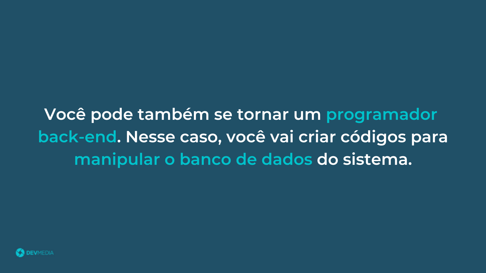
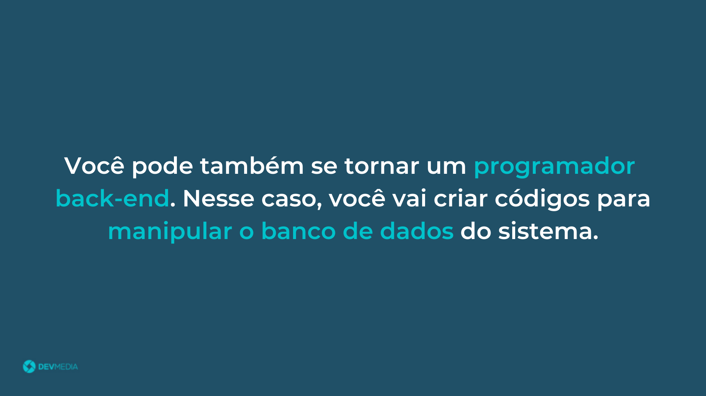
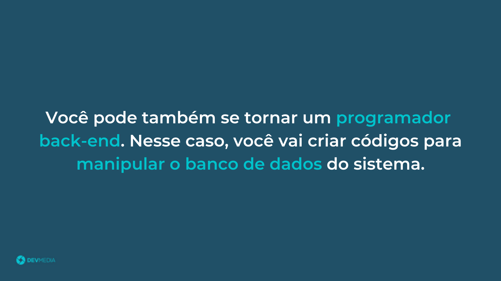

Seja bem-vindo(a) à programação e parabéns pela
iniciativa.
Através do flow abaixo você vai conhecer as carreiras da
programação:

O programador Full Stack domina tanto a carreira front-end quanto a carreira back-end
Já conheço as carreiras disponíveis na programação, mas qual eu devo seguir? O flow abaixo responde essa pergunta:


Veja na Figura 1 uma representação da carreira Full Stack.

Para quem está dando os primeiros passos na programação, recomendamos o Plano de estudos Programador Front-End (web).
Caso você já tenha conhecimentos na programação, sinta-se à vontade para escolher qualquer uma das carreiras